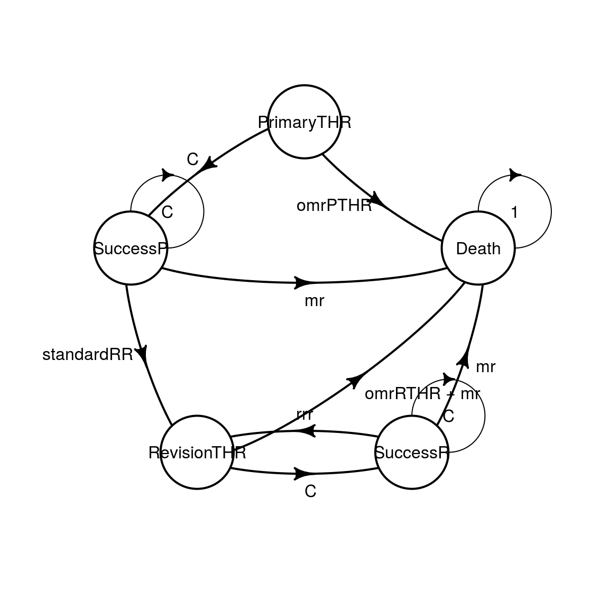

Time-varying Markov Models (Non-Homogeneous)
2019-10-22
d_non_homogeneous.RmdModel description
This example is an implementation of the assessment of a new total hip replacement (THR) technology described in chapter 3.5 of Decision Modelling for Health Economic Evaluation. A more detailed report is available at this location. This reports goes a bit further in the analysis. For the sake of simplicity we will not reproduce exactly the analysis from the book. See vignette vignette("i-reproduction", "heemod") for an exact reproduction.
This model has 5 states:
- Primary THR: starting state, individuals receive either the standard or the new THR (called NP1), outcomes are either success of primary THR or death (the operative mortality rate of primary THR will be called
omrPTHR); - Success of primary THR: state after receiving primary THR if the surgery is successfull, individuals can stay in that state, need a THR revision, or die of other causes;
- Revision of primary THR: for individuals whose primary THR needed revision, outcomes are either success of revision THR or death (the operative mortality rate of revision THR will be called
omrRTHR); - Success of revision THR: state after receiving revision THR if the surgery is successfull, individuals can stay in that state, need a THR re-revision, or die of other causes;
- Death (either caused by THR or another cause).
Two transition probabilities are time-varying in this model:
- Probability of death by another cause increases with age;
- Probability of primary THR revision changes with time.
Other-Cause death
Other-cause death probabilities (mortality rate mr) for the United Kingdom is taken from WHO databases using the get_who_mr() function. The variable sex, taking values 0 and 1, must be recoded in "FMLE" and "MLE" before being passed to this function.
THR revision
- Primary THR revision probability for the standard THR, called
standardRRincreases with time with the following formula (a Weibull distribution):
\[ P_{revision} = 1 - \exp(\lambda \times ((t-1)^\gamma-t^\gamma)) \]
Where \(t\) is the time since revision, \(\gamma = 1.45367786\) and:
\[ \lambda = exp(cons + ageC \times age + maleC \times sex) \]
Where \(age\) and \(sex\) (female = 0, male = 1) are individual characteristics, \(cons = -5.49094\), \(ageC = -0.0367\) and \(maleC = 0.768536\).
- For the NP1 procedure the standard procedure revision probability
standardRRis modified by the relative risk \(rrNP1 = 0.260677\).
\[ P_{revision} = 1 - \exp(\lambda \times rr \times NP1 \times ((t-1)^\gamma-t^\gamma)) \]
- Revision THR re-revision (
rrr) probability is set to be constant at 0.04 per year.
Parameter definition
The key element to specify time-varying elements in heemod is through the use of the package-defined variables markov_cycle and state_cycle. See vignette vignette("b-time-dependency", "heemod") for more details.
In order to build this more complex Markov model, parameters need to be defined through define_parameters() (for 2 reasons: to keep the transition matrix readable, and to avoid repetition by re-using parameters between strategies).
The equations decribed in the previous section can be written easily, here for a female population (sex = 0) starting at 60 years old (age_init = 60).
param <- define_parameters(
age_init = 60,
sex = 0,
# age increases with cycles
age = age_init + markov_cycle,
# operative mortality rates
omrPTHR = .02,
omrRTHR = .02,
# re-revision mortality rate
rrr = .04,
# parameters for calculating primary revision rate
cons = -5.49094,
ageC = -.0367,
maleC = .768536,
lambda = exp(cons + ageC * age_init + maleC * sex),
gamma = 1.45367786,
rrNP1 = .260677,
# revision probability of primary procedure
standardRR = 1 - exp(lambda * ((markov_cycle - 1) ^ gamma -
markov_cycle ^ gamma)),
np1RR = 1 - exp(lambda * rrNP1 * ((markov_cycle - 1) ^ gamma -
markov_cycle ^ gamma)),
# age-related mortality rate
sex_cat = ifelse(sex == 0, "FMLE", "MLE"),
mr = get_who_mr(age, sex_cat, country = "GBR", local = TRUE),
# state values
u_SuccessP = .85,
u_RevisionTHR = .30,
u_SuccessR = .75,
c_RevisionTHR = 5294
)
param## 20 unevaluated parameters.
##
## age_init = 60
## sex = 0
## age = age_init + markov_cycle
## omrPTHR = 0.02
## omrRTHR = 0.02
## rrr = 0.04
## cons = -5.49094
## ageC = -0.0367
## maleC = 0.768536
## lambda = exp(cons + ageC * age_init + maleC * sex)
## gamma = 1.45367786
## rrNP1 = 0.260677
## standardRR = 1 - exp(lambda * ((markov_cycle - 1)^gamma - markov_cycle^gamma))
## np1RR = 1 - exp(lambda * rrNP1 * ((markov_cycle - 1)^gamma - markov_cycle^gamma))
## sex_cat = ifelse(sex == 0, "FMLE", "MLE")
## mr = get_who_mr(age, sex_cat, country = "GBR", local = TRUE)
## u_SuccessP = 0.85
## u_RevisionTHR = 0.3
## u_SuccessR = 0.75
## c_RevisionTHR = 5294Transition matrix definition
Now that parameters are defined, the probability transitions can be easily written:
mat_standard <- define_transition(
state_names = c(
"PrimaryTHR",
"SuccessP",
"RevisionTHR",
"SuccessR",
"Death"
),
0, C, 0, 0, omrPTHR,
0, C, standardRR, 0, mr,
0, 0, 0, C, omrRTHR+mr,
0, 0, rrr, C, mr,
0, 0, 0, 0, 1
)
mat_standard## A transition matrix, 5 states.
##
## PrimaryTHR SuccessP RevisionTHR SuccessR Death
## PrimaryTHR C omrPTHR
## SuccessP C standardRR mr
## RevisionTHR C omrRTHR + mr
## SuccessR rrr C mr
## Death 1mat_np1 <- define_transition(
state_names = c(
"PrimaryTHR",
"SuccessP",
"RevisionTHR",
"SuccessR",
"Death"
),
0, C, 0, 0, omrPTHR,
0, C, np1RR, 0, mr,
0, 0, 0, C, omrRTHR+mr,
0, 0, rrr, C, mr,
0, 0, 0, 0, 1
)
mat_np1## A transition matrix, 5 states.
##
## PrimaryTHR SuccessP RevisionTHR SuccessR Death
## PrimaryTHR C omrPTHR
## SuccessP C np1RR mr
## RevisionTHR C omrRTHR + mr
## SuccessR rrr C mr
## Death 1While it is possible to plot the matrix thanks to the diagram package, the results may not always be easy to read.
## Le chargement a nécessité le package : diagram
State & strategy definition
Utilities and costs are then associated to states. In this model costs are discounted at a rate of 6% and utilities at a rate of 1.5%.
Now that parameters, transition matrix and states are defined we can define the strategies for the control group and the NP1 treatment.
We use define_starting_values() to take into account the cost of surgery.
strat_standard <- define_strategy(
transition = mat_standard,
PrimaryTHR = define_state(
utility = 0,
cost = 0
),
SuccessP = define_state(
utility = discount(u_SuccessP, .015),
cost = 0
),
RevisionTHR = define_state(
utility = discount(u_RevisionTHR, .015),
cost = discount(c_RevisionTHR, .06)
),
SuccessR = define_state(
utility = discount(u_SuccessR, .015),
cost = 0
),
Death = define_state(
utility = 0,
cost = 0
),
starting_values = define_starting_values(
cost = 394
)
)
strat_standard## A Markov model strategy:
##
## 5 states,
## 2 state valuesstrat_np1 <- define_strategy(
transition = mat_np1,
PrimaryTHR = define_state(
utility = 0,
cost = 0
),
SuccessP = define_state(
utility = discount(u_SuccessP, .015),
cost = 0
),
RevisionTHR = define_state(
utility = discount(u_RevisionTHR, .015),
cost = discount(c_RevisionTHR, .06)
),
SuccessR = define_state(
utility = discount(u_SuccessR, .015),
cost = 0
),
Death = define_state(
utility = 0,
cost = 0
),
starting_values = define_starting_values(
cost = 579
)
)
strat_np1## A Markov model strategy:
##
## 5 states,
## 2 state valuesModel analysis
Both strategies can now be run for 60 years. By default models are computed for 1000 person starting in PrimaryTHR.
res_mod <- run_model(
standard = strat_standard,
np1 = strat_np1,
parameters = param,
cycles = 60,
cost = cost,
effect = utility
)## Fetching mortality data from package cached data.## Using cached data from year 2015.A comparison of both strategies can be done with summary(). The incremental cost and effect are displayed in columns Cost and Effect.
## 2 strategies run for 60 cycles.
##
## Initial state counts:
##
## PrimaryTHR = 1000L
## SuccessP = 0L
## RevisionTHR = 0L
## SuccessR = 0L
## Death = 0L
##
## Counting method: 'life-table'.
##
## Values:
##
## utility cost
## standard 16239.62 529400.8
## np1 16291.79 614827.1
##
## Efficiency frontier:
##
## standard -> np1
##
## Differences:
##
## Cost Diff. Effect Diff. ICER Ref.
## np1 85.42637 0.05216416 1637.645 standardThe new treatment costs £1638 more per QALY gained.
It should be noted that this result differs from the original study. This difference is explained by higher population-level all-causes mortality rates in the original study than in the WHO database (used here). See vignette vignette("i-reproduction", "heemod") for an exact reproduction of the analysis.
We can plot the counts per state:
plot(res_mod, type = "counts", panel = "by_state", free_y = TRUE) +
theme_bw() +
scale_color_brewer(
name = "Strategy",
palette = "Set1"
)## Scale for 'colour' is already present. Adding another scale for
## 'colour', which will replace the existing scale.